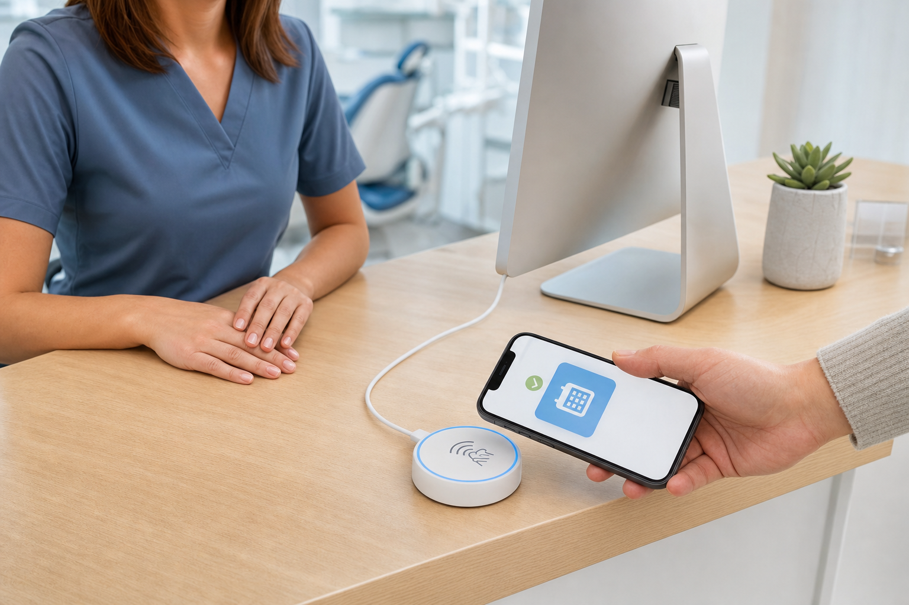

No app
Borrow the phone
Use capabilities already present on the device instead of requiring a companion install.
Calendar Puck · product concept
A one-purpose desk object that turns a tap into a calendar note—without asking someone to install an app, join Wi-Fi, or understand the machinery behind it.
Concept visualization · no hardware design yet · NFC path unproven
Micah Alpern · Hacker Dojo

The job
The experience is for a shared room, not a personal gadget. The object should be legible, local, and calm enough that anyone can use it once.
Experience contract
No app
Use capabilities already present on the device instead of requiring a companion install.
No cloud
A nearby Mac performs calendar work; the puck stays thin and purpose-built.
No mystery
The display must make ready, transfer, success, and failure unmistakable.
What the picture means
The round puck, light ring, materials, scale, and placement are all conceptual. The image exists to make one interaction legible: a patient brings their own phone close to a small, USB-powered object on a shared desk.
Project concept image · form, components, and interaction details are not final
Architecture
Physical truth
What exists
The Mac service, mock transport, firmware path, and decision records make the system testable before hardware arrives.
What does not
No enclosure, display, light behavior, materials, size, or manufacturing direction has been chosen.
What proves it
USB, NFC, iPhone behavior, state feedback, and failure recovery must work together on a physical bench.
Evidence ledger
| Claim | Status | Next evidence |
|---|---|---|
| Local Mac can own calendar credentials | Architecture established | End-to-end host demo |
| LAN HTTP diagnostic path | Useful for development | Keep explicitly non-final |
| App-free, offline, near-one-tap handoff | Hypothesis | Physical NFC/phone matrix |
| Final puck interaction | Concept | Usability test on real enclosure |
Takeaway
The simpler the object feels, the more honest its prototype evidence must be.
Calendar Puck · concept status is part of the design